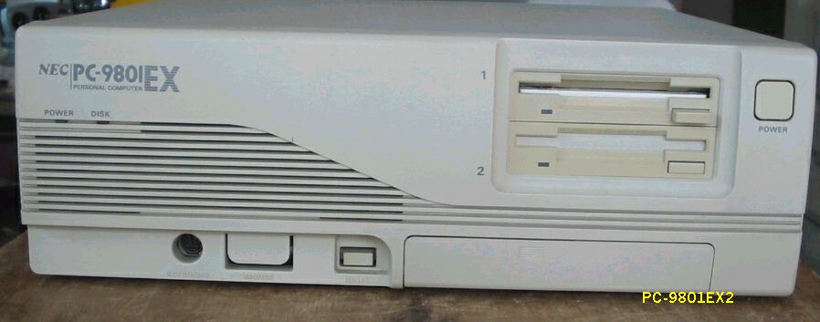
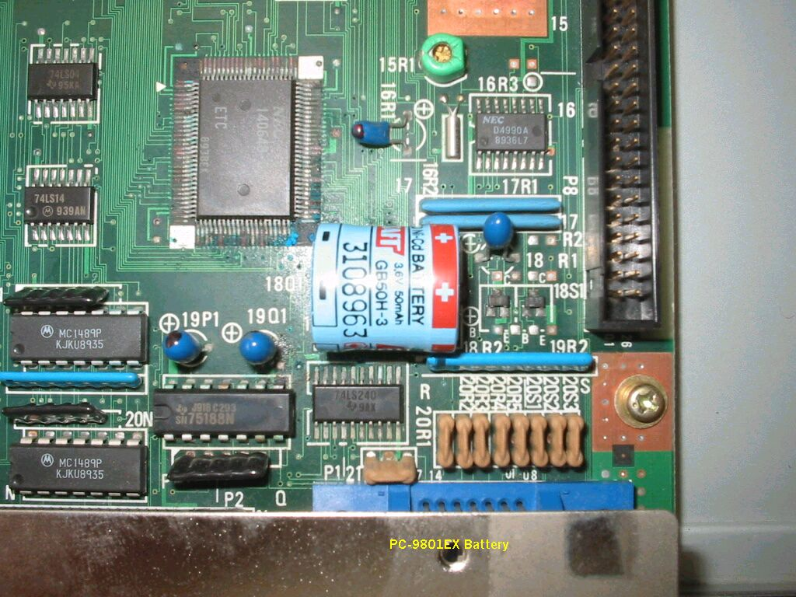

PC-9801EX2

PC98EX2を入手しました。PC98E*は初めてです。
入手したときの状態は、見かけはきれいで、ひどい使い方はされていなく、
良好のように見えました。
火を入れると、立ち上がりましたが、すぐにリセットがかかり、繰り返すと、
赤でSYSTEM SHUTODOWN のメッセージが出ます。
しばらく火を入れたままにしたら、リセットがかからずに、動作するようになったのですが、
長期保存のため分解清掃したら、下の写真のように、バッテリーが液漏れし、近くのICの足が
緑青を吹いています。これが原因だったのですね。きれいに拭き組み立て直して、
安定に動作しています。PC-98で、バッテリーの液漏れはこれで２台目です。

とりあえず使い道がないので、これ以上手を加えずに、コレクションの１台として保存する
ことにしました。
(2003/09/03 記)
PC-9801EX2の仕様
型 名 ：PC-9801EX2
価 格 ：348000
発表日 ：89/04
出荷日 ：89/04
CPUクロック ： V30-8MHz/i80286(10/12MHz)
ROM ： BIOS及びN88-BASIC(86)96KB
標準RAM ： 640KB
最大ユーザーズメモリ ： 9.6MB
グラフィックVRAM容量 ： 256KB
グラフィックVRAM画素数： 640*400
グラフィックVRAM色数 ： 4096色中16色2画面(液晶ディスプレイ時は単色8階調)
サウンドVRAM ： 16KB
テキストVRAM ： 12KB
拡張スロット数 ： 3
拡張スロット電源容量 + 5V ：0.8A
+12V ：0.06+A
-12V ：0.07A
標準実装ドライブ FDD ：3.5インチ1M/640KFDD2-DRIVE
内蔵インタフェースコネクタ：1MFDDI/F プリンタI/F RS-232CI/F
：マウスI/F B/WCRTI/F デジタルCRTI/F
：アナログCRTI/F
漢字 ：標準:第一、第二、拡張
サウンド機能 ：標準実装
カレンダ時計 ：μPD4990相当
ＶＣＣＩ適合 ：基準レベル0
使用条件 電圧 ：AC100V±10%
周波数：50/60
温度 ：10〜35
湿度 ：20〜80%(結露なし)
消費電力 標準 (W) ：55
最大 (W) ：120
エネルギー消費効率 (W) ：55
外形寸法 本 体 (mm) (W)：380 (D)：335 (H)：128
キーボード(mm) (W)：435 (D)：180 (H)：34
重量 本体 (Kg) ：7.5
キーボード(Kg) ：1.2
PC9801のページに戻る